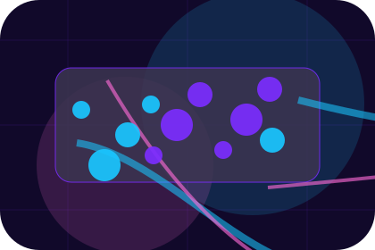
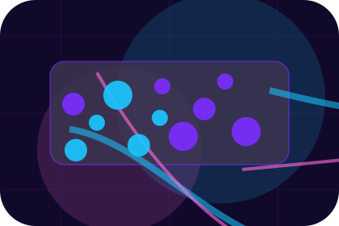
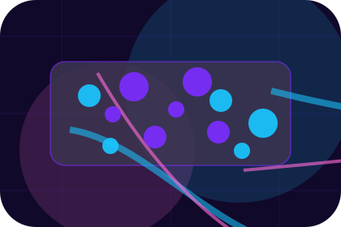
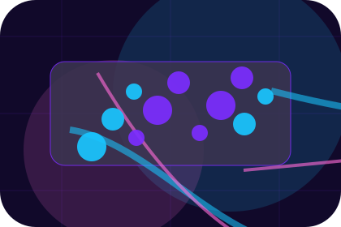
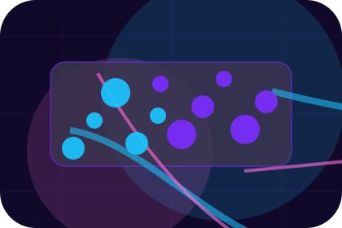
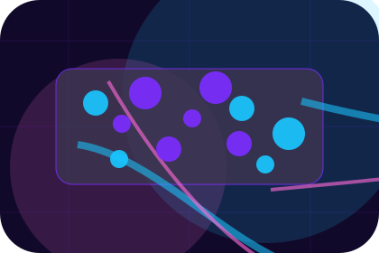
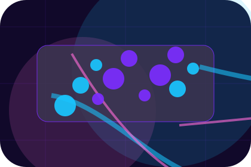
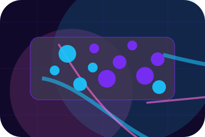

Context
Threats gives the page a specific angle instead of repeating the navigation label.
Cybersecurity
Cloud security command centre for privacy and threat reduction.

Home / 02
Threats adds dark context to the home route, using the cloud security command centre structure to support privacy and threat reduction before visitors choose a next step.
Cipher uses rounded cloud-risk cards and focused copy to make the decision easier to scan, aligning the section with privacy and threat reduction rather than filling space.
Open Firm

Threats gives the page a specific angle instead of repeating the navigation label.
Home / 03
Exposure adds dark context to the home route, using the cloud security command centre structure to support privacy and threat reduction before visitors choose a next step.
Cipher uses rounded cloud-risk cards and focused copy to make the decision easier to scan, aligning the section with privacy and threat reduction rather than filling space.
Open ServicesExposure gives the page a specific angle instead of repeating the navigation label.
The rounded cloud-risk cards show what to compare, what to avoid, and what matters most for cybersecurity, privacy & risk protection visitors.
The final cue points to a useful internal route so the section keeps the journey moving.
Home / 04
Promise defines the better state Cipher is built to create, with enough detail to make the promise believable.
A cloud-risk command site with neon topology, rounded security modules, compliance proof, and audit routing. The section grounds that direction in concrete benefits, visible tradeoffs, and a next route visitors can use when the promise feels relevant.
Open RiskPromise defines what becomes clearer, easier, or safer when Cipher is the chosen route.
The benefit is tied to privacy and threat reduction, not a vague quality claim.
Visitors get a linked path to compare the promise against services, standards, or examples.
Home / 05
Services explains the practical scope, best-fit situations, and expected outcome so cybersecurity visitors can compare options without decoding jargon.
The section keeps the offer concrete: what is included, who it is best for, what decision it supports, and which linked route gives the deeper detail.
Open Services
Who should use services and when it belongs in the home journey.

The practical benefit visitors should expect after choosing this route.

Where to compare details, pricing, support, or contact options before committing.
Purple cloud-risk hero
Select the closest route and Cipher keeps the next step, proof, and follow-up expectation aligned with privacy and threat reduction.
Home / 07
Proof shows what changes after the work: clearer decisions, visible progress, and proof points that connect the offer to real outcomes.
The layout connects before-and-after thinking with measured outcomes, making the result easy to scan without promising what the business cannot guarantee.
Open ResponseThe uncertainty, delay, or missed opportunity visitors bring into proof.
The clearer, safer, or more valuable state Cipher is designed to support.
The visible cue that connects proof to a believable decision, not a loose claim.
Home / 08
Compliance gives the proof layer for home: standards, evidence, and reassurance that make the next decision feel grounded.
Instead of relying on vague claims, Cipher presents visible standards, process cues, and proof artifacts that help cybersecurity visitors judge fit.
Open PricingVisible proof that helps visitors believe the claims behind compliance.
The quality, safety, or operating expectation this section makes explicit.
What becomes clearer before someone decides whether to request an audit.
Home / 09
Questions handles buying doubts directly so visitors can understand timing, fit, limits, and the safest next step.
Answers are short by design: enough to remove hesitation, not so much that the page turns into documentation before the visitor can act.
Open Contact
Questions gives the page a specific angle instead of repeating the navigation label.

The rounded cloud-risk cards show what to compare, what to avoid, and what matters most for cybersecurity, privacy & risk protection visitors.

The final cue points to a useful internal route so the section keeps the journey moving.
Cipher starts with a focused intake so the recommendation matches the visitor's context, risk, timing, and readiness.
Each route explains inclusions, exclusions, documents, timing, and the decision points that affect final delivery.
The theme uses cloud security command centre, rounded cloud-risk cards, and risk matrix, compliance checklist, incident response stepper rather than a shared template rhythm.
Purple cloud-risk hero
Select the closest route and Cipher keeps the next step, proof, and follow-up expectation aligned with privacy and threat reduction.
Home / 10
Cipher closes the home route with a clear action, a quick reminder of the value, and a low-friction way to request an audit.
Visitors who are ready can use the primary action. Visitors who are still comparing can scan the section links, proof, and support routes before they request an audit.
Request AuditThe final block keeps the choice simple: act now, compare one more proof route, or send enough detail for a focused response.
Request Auditprivacy and threat reduction
A cloud-risk command site with neon topology, rounded security modules, compliance proof, and audit routing. Home ends with a direct path to request an audit, plus enough context for visitors who still need to compare.
 Request Audit
Request Audit